GitHub - 404Vector/Competition.AIStages.TrashObjectDetection: 사진에서 Object Detection을 사용하여 쓰레기 객체를 검출하고 분류하는 Task
환경 구성에 필요한 package 설치 mmcv 설치(pipenv로 직접설치 안됨) pipenv install pipenv run mim install mmcv-full [train] python train.
https://github.com/404Vector/Competition.AIStages.TrashObjectDetection
==이 대회는 비공개 대회이며, Bootcamp AI Tech 4기 교육의 일환으로 진행되었습니다.==
Team Member
- 김형석 - [https://github.com/404Vector]
- 이동훈 - [https://github.com/teedihuni]
- 전지용 - [https://github.com/Jiyong-Jeon]
- 정원국 - [https://github.com/jungwonguk]
- 한상준 - [https://github.com/jphan32]
요약
==My Contribute==
- ==팀 내 최대 Code Contributor==
- ==EDA==
- ==Category Histogram Analysis 및 시각화==
- ==Category RGB Component Analysis 및 시각화==
- ==Annotation per Image Analysis 및 시각화==
- ==Category Size Analysis 및 시각화==
- ==Model==
- ==SSD 훈련 및 평가==
- ==Ensemble 기능 개발==
- ==조건부 Annoation 삭제 기능 개발==
- ==Submission 생성 자동화 기능 개발==
- ==Confusion Matrix 생성 자동화 기능 개발==
Task
- 쓰래기 2D Object Detection
- BBox 좌표, Category, Score
Evaluation Metric
- mAP50(Mean Average Precision)


Data
-
전체 이미지 개수 : 9754장
- train : 4883
- test : 4871
-
이미지 크기 : (1024, 1024)
-
10 Class : General trash, Paper, Paper pack, Metal, Glass, Plastic, Styrofoam, Plastic bag, Battery, Clothing
-
Annotation Format : COCO
개요
Info
바야흐로 대량 생산, 대량 소비의 시대. 우리는 많은 물건이 대량으로 생산되고, 소비되는 시대를 살고 있습니다. 하지만 이러한 문화는 ‘쓰레기 대란’, ‘매립지 부족’과 같은 여러 사회 문제를 낳고 있습니다.
분리수거는 이러한 환경 부담을 줄일 수 있는 방법 중 하나입니다. 잘 분리배출 된 쓰레기는 자원으로서 가치를 인정받아 재활용되지만, 잘못 분리배출 되면 그대로 폐기물로 분류되어 매립 또는 소각되기 때문입니다.
따라서 우리는 사진에서 쓰레기를 Detection 하는 모델을 만들어 이러한 문제점을 해결해보고자 합니다. 문제 해결을 위한 데이터셋으로는 일반 쓰레기, 플라스틱, 종이, 유리 등 10 종류의 쓰레기가 찍힌 사진 데이터셋이 제공됩니다.
여러분에 의해 만들어진 우수한 성능의 모델은 쓰레기장에 설치되어 정확한 분리수거를 돕거나, 어린아이들의 분리수거 교육 등에 사용될 수 있을 것입니다. 부디 지구를 위기로부터 구해주세요! 🌎

본론
EDA
-
Category Histogram Analysis
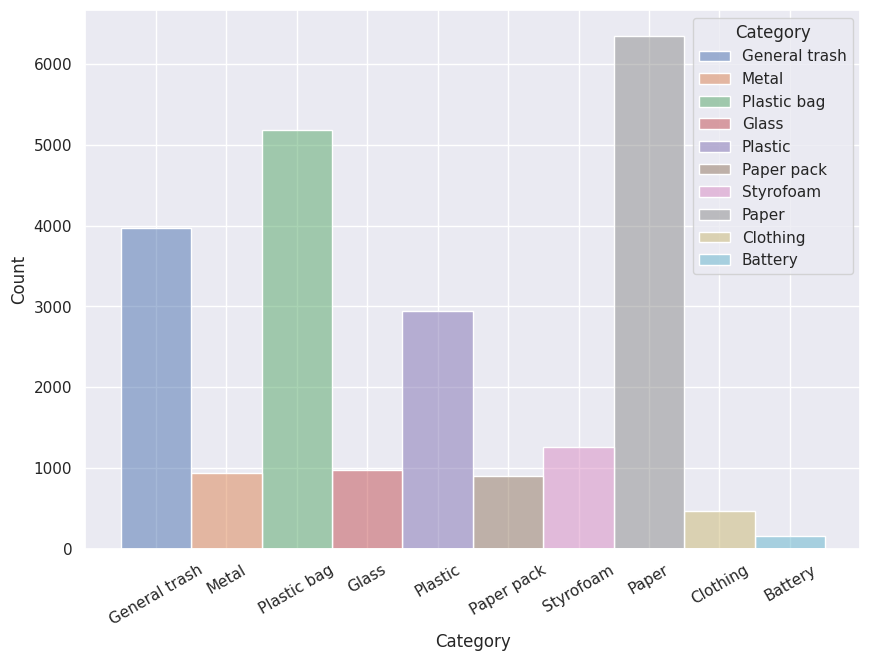
-
RGB Component Analysis by Category
-
Average, Std by Channel for red
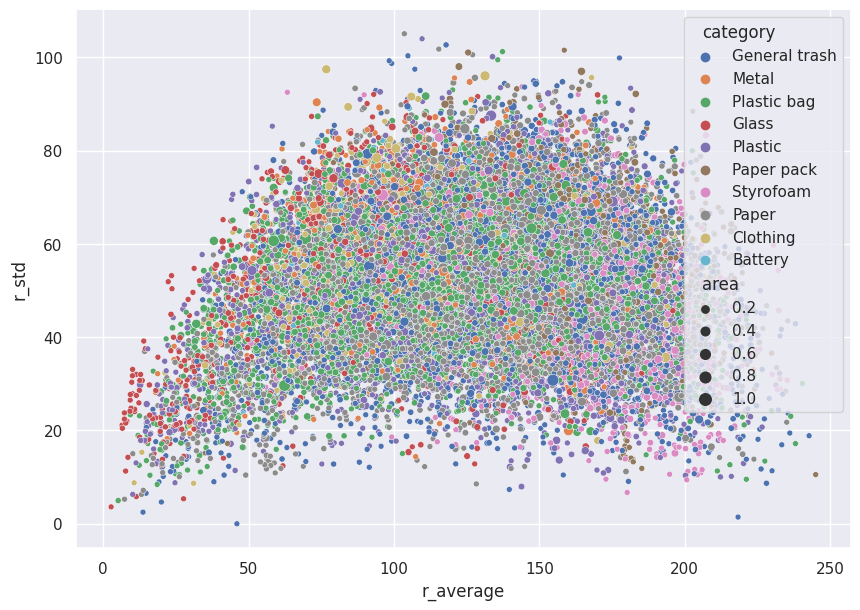
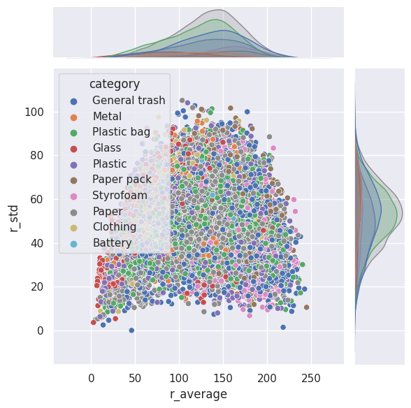
-
Average, Std by Channel for green
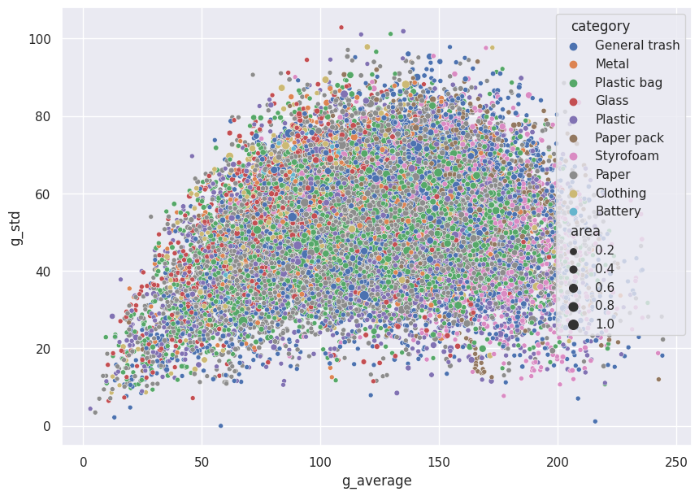
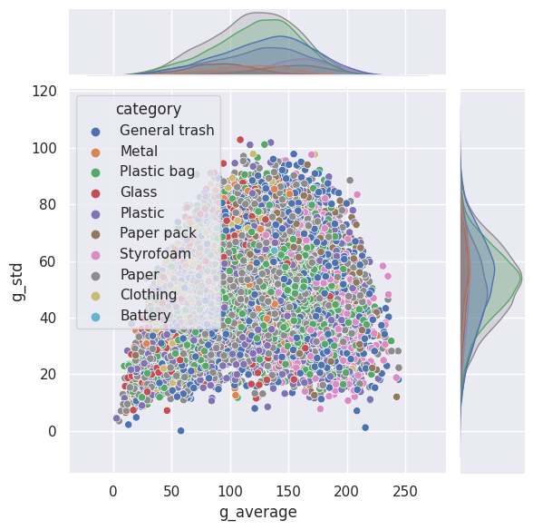
-
Average, Std by Channel for blue
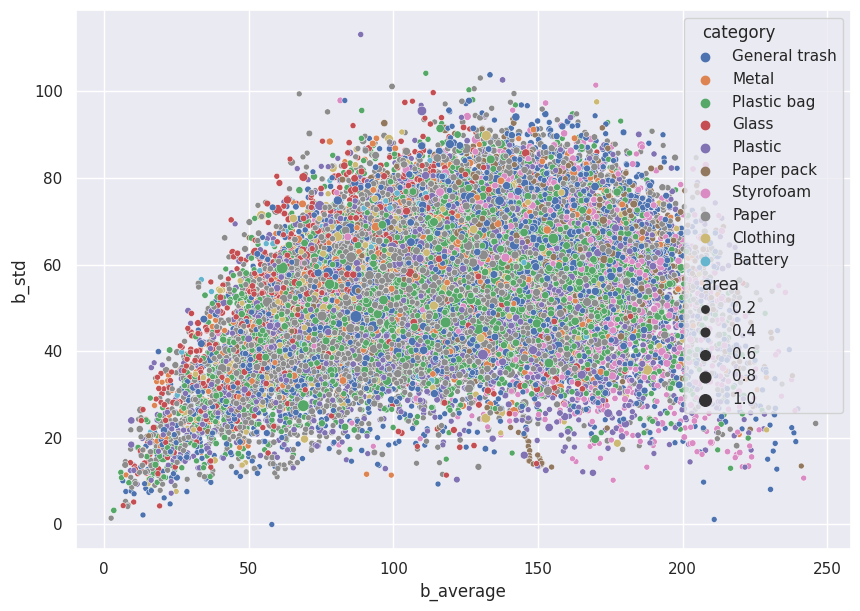
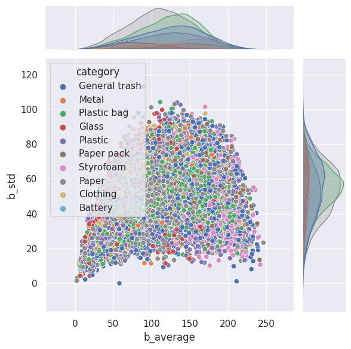
-
RGB Average

-
RGB Mean
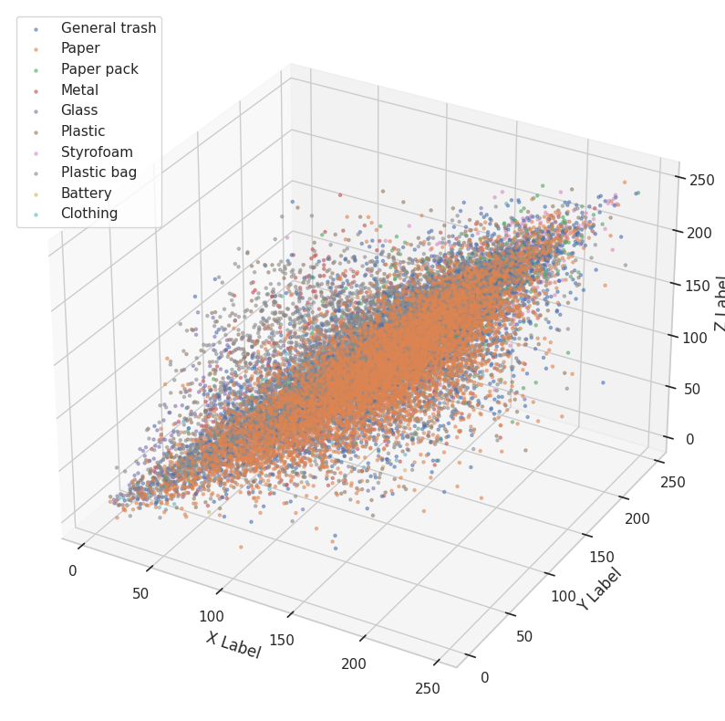
-
RGB Std.
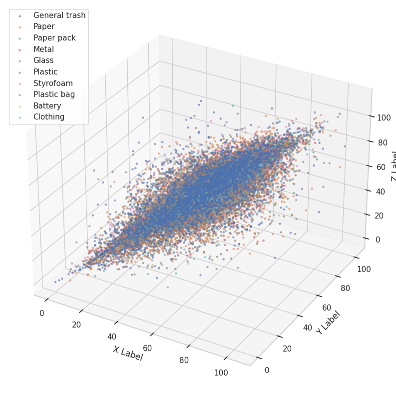
-
-
Annotation per Image Analysis
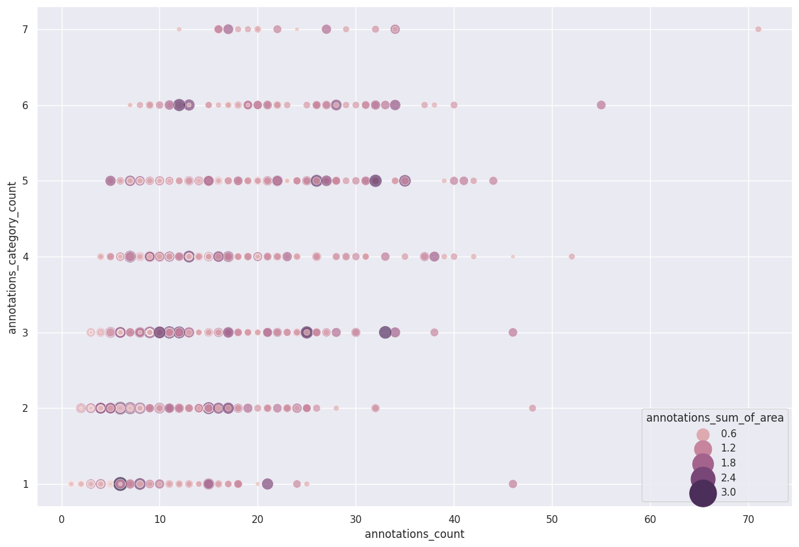
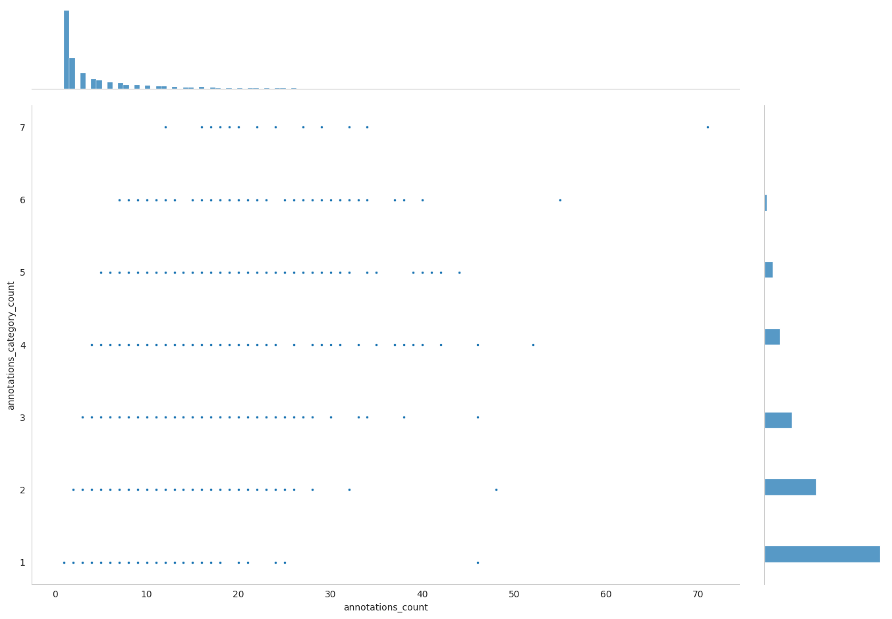
-
Size Analysis by Category
Width & Height
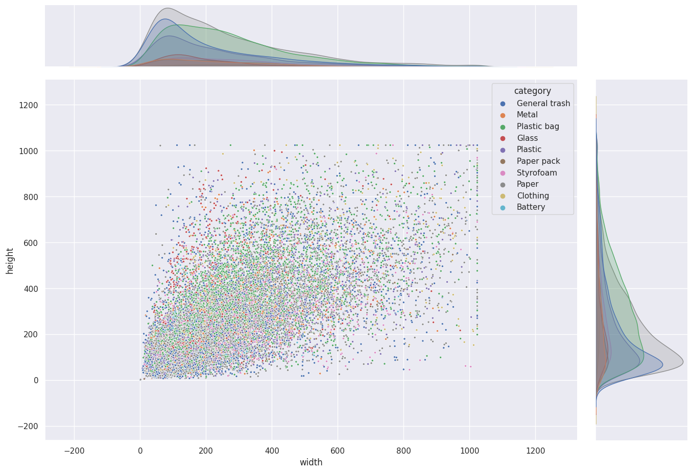
Category ID & W/H Ratio
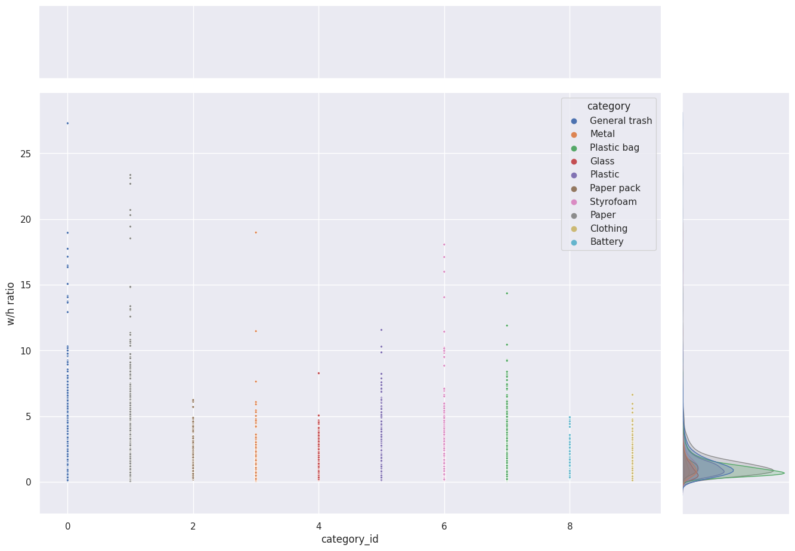
Data
- Augmentation
- 모델이 Overfitting 되는 경향을 파악, 추가되는 Augmentation의 장점과 모델에 가해지는 단점을 전부 생각한 후 적용 유무를 결정
- ShiftScaleRotate → Overfitting을 막기위해 데이터 증강의 방법으로서 진행
- RandomBrightnessContrast → 이미지 EDA결과 밝기와 대조가 올라가면 이미지 구분이 더 잘 될 것이라는 판단 하에 진행.
- RGBShift → RGB 값을 조정하여 원하는 Object가 더 눈에 띄고 모델이 잘 찾아낼 수 있게 함
- 다만 값을 크게 줄 경우 오히려 방해가 되므로 적정 한 값을 테스트를 통해 찾아냄
- HueSaturationValue → HSV 값을 조정하여 원하는 Object가 더 눈에 띄고 모델이 잘 찾아낼 수 있게 함
- RGBShift와 마찬가지로 적정 한 값을 테스트를 통해 찾아냄
- JpegCompression → 이미지 품질을 낮춰서 강선성을 높이고자 함, 품질이 낮아지는 면이 걱정되었지만 단일 이미지에 적용 후 확인해보니 괜찮다고 판단
- ChannelShuffle → 무작위로 채널을 섞어줘서 강건성을 높이고자 함
- Blur → Drop out 과 같은 효과를 주어 모델의 강건성을 높이고자 함.
- MedianBlur → Noise를 어느정도 제거하고자 하였음, 다만 화질이 뭉쳐 있는 부작용이 일어날 수 있으나 Task를 수행하는 데는 큰 영향이 없다고 판단
- 모델이 Overfitting 되는 경향을 파악, 추가되는 Augmentation의 장점과 모델에 가해지는 단점을 전부 생각한 후 적용 유무를 결정
Test
- 개별 최적 모델 탐색
- Backbone
- Swin 계열, Resnet50, Resnext, Darknet, …
- Model
- RetinaNet, YOLOX, FPN, R-CNN, Cascade R-CNN, Deformable, DETR, SSD…
- Backbone
- 모델 Top-2
- Deformable DETR (Backbone : Resnet 50)
-
모델 구조
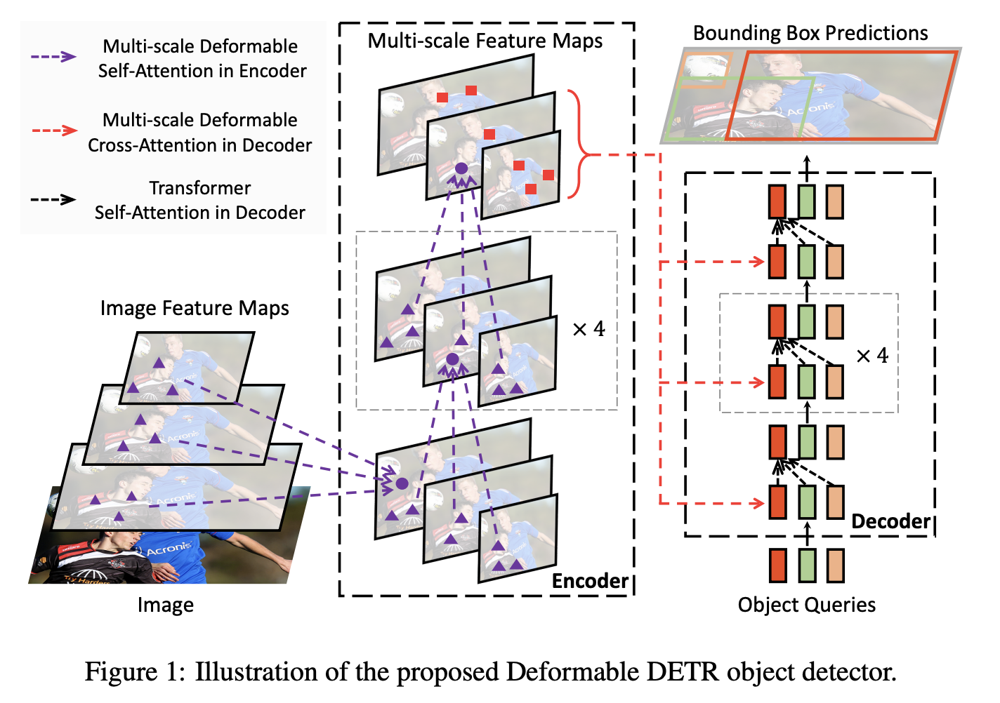
-
학습 결과
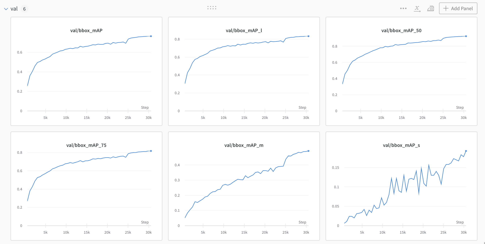
-
모델에 대한 고찰
- 백본으로 Resnet-50을 사용하고, Neck / Head 구조는 Deformable DETR 을 채택하였고, Two-stage 와 One-stage가 모두 가능한 구조여서 본 실험에서는 Two-stage로 실험을 하게 되었다.
- MMDetection에서 Pre-trained model weight 를 제공하고 있어서, weight 를 불러오지 않았을 때에 비하여 모델의 빠른 수렴을 얻을 수 있었다.
- Soft NMS 를 적용함에 따라 최종 추론하는 Boundary Box를 유효하게 늘릴 수 있었고, mAP의 향상이 있었다.
-
- Faster RCNN (Backbone : Swin-S)
-
모델 구조
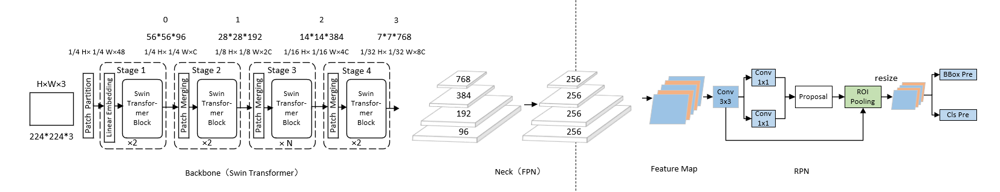
-
학습 결과
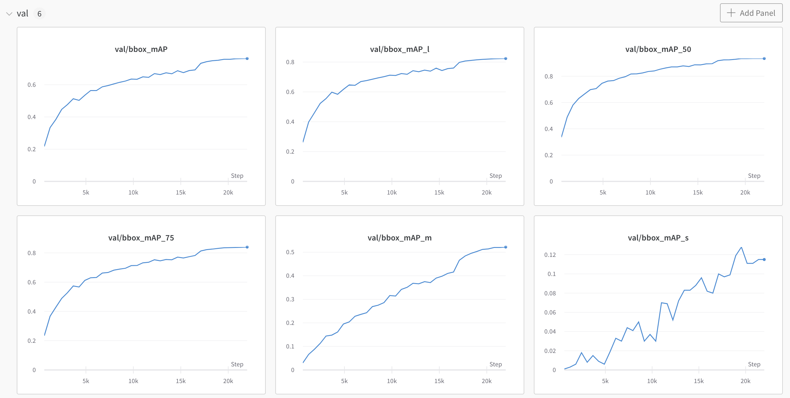
-
모델에 대한 고찰
- 가장 좋은 결과를 내고 있었던 Faster-RCNN 모델에 백본을 Swin Transformer S 로 변경하여 학습을 진행하였고, Resnet-50 과 비교하여 Overfitting이 지연되고, 학습 셋의 특징을 더 잘 수렴할 수 있었다.
- MMDetection에서 Pre-trained model weight 를 제공하고 있어서, weight 를 불러오지 않았을 때에 비하여 모델의 빠른 수렴을 얻을 수 있었다.
- Soft NMS 를 적용함에 따라 최종 추론하는 Boundary Box를 유효하게 늘릴 수 있었고, mAP의 향상이 있었다.
-
- Deformable DETR (Backbone : Resnet 50)
- Overlapping Object Detection Strategy
- Soft NMS
- 기존 NMS 방식을 Soft NMS 방식으로 바꿔 Overlapping Object를 탐지 할 수 있도록 변경
- Confidence Score
- Confidence thresold를 낮춰 많은 BBox를 검출하여 Overlapping Object를 검사할 수 있게 추론
- NMS IoU thresold
- IoU thresold를 낮춰 가장 점수가 높은 Bbox와 근처의 Bbox까지 더 찾아질 수 있도록 변경
- Soft NMS
- Ensemble
-
Ensemble Method
- NMS(None Maximum Suppression) 사용
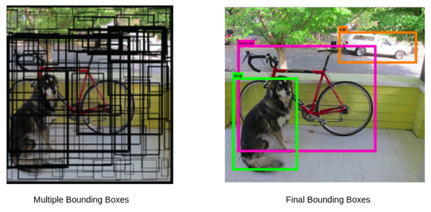
-
Ensemble Parameter : IOU Threshold
- IOU가 해당 Threshold이상인 것만 Ensemble 수행
- Parameter Search : 이진 탐색 기법으로 접근, Submission을 통해 최적 Threahold 추정
-
IOU 0.5 → IOU 0.9 → IOU 0.7 → IOU 0.6 → IOU 0.55(Best)
-
-
결론
-
결과
-
Public 0.5897 → Private 0.5739 (19위)
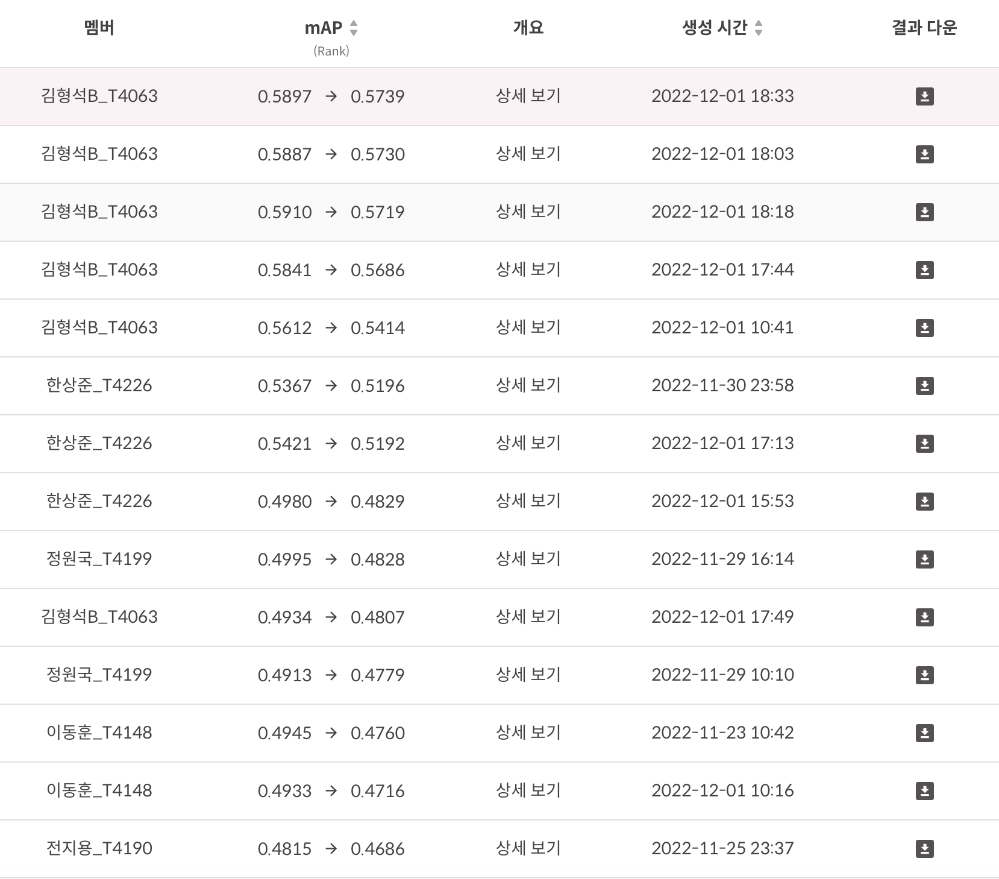
-
Deformable DETR (R50) 과 Faster-RCNN (Swin-S), Faster-RCNN (800x600, soft_nms,treshold 0.1 ) 모델을 IoU Threshold 0.55 로 NMS 하여 앙상블한 결과를 제출한 것이 최종 제출에서 가장 좋은 결과를 얻게 되었다.
-
이는, Neck이 트랜스포머인 경우, 백본이 트랜스포머인 경우 등 서로 다른 특성을 가지는 모델을 앙상블 하였기에 다양성을 이끌어 낼 수 있었으며, mAP 를 계산하는데 있어 Precision을 높을 수 있었다고 평가하고 있다.
-
-
느낀점
- Team
- Backbone 만 Pretrained 모델을 사용한 것 보다 전체 Architecture의 Pretrained 모델을 가져오는 것이 더 학습에 효과적이였다.
- Backbone 만이 아닌 Neck, head 부분도 Task에 적합한 Pretrained 모델을 사용했다면 더 좋은 결과를 얻을 수 있을 것이라 생각된다.
- mAP가 높아도 결과 이미지 시각화 시 원하는 모습을 보이지 않았다.
- 실생활에 사용할 모델을 학습할 때는 사용 목적과 의미에 따라 평가 지표를 더 정확하게 사용해야 함을 알게되었다.
- 외부 경진대회 참가로 인하여 일주일 정도 늦은 출발을 하게되었는데, 실험 횟수의 부족이 최종 결과 도출에서도 큰 악영향으로 다가왔다.
- 대회 후반부에 들어선 후, 오르지 않는 성능과 타 팀과의 리더보드 랭킹 격차, 부족한 시간으로 체계적인 실험을 진행하는데 큰 부담이 되었다.
- 하루도 허투루 쓰지 않고 최대한 많은 실험을 진행하여 온전히 대회에 집중하는것이 필요하다고 느꼈다.
- 본 대회처럼 실험 관리를 위하여 WandB 등 을 적극적으로 활용해야 할 것이라고 생각하며, 제공되는 기본 기능 이외에도 우리가 수집해야 할 Metric 이 있다면 추가하거나 이미지도 수집하는 등 커스텀도 필요하다고 느꼈다.
- 개인
- 한 모델에 매몰되지 말고, 더욱 다양한 실험이 필요하다고 느꼈다.
- SSD라는 모델로 많은 실험을 했으나, 태생적인 한계로 결과가 좋지 못했다.
- SSD는 paperswithcode 기준으로 성능이 별로 좋은 모델이 아니다
- mAP50 : 48.5
- 그런데 이건 생각하지 못하고 모델이 낼 수 있는 성능한계에 가까워졌다는 생각을 하지 못하고 SSD의 성능 향상에 계속 매몰되어 있었다
- Best mAP50 : 0.4538
- SSD는 paperswithcode 기준으로 성능이 별로 좋은 모델이 아니다
- SSD라는 모델로 많은 실험을 했으나, 태생적인 한계로 결과가 좋지 못했다.
- 실험을 통해 Hyperparameter를 튜닝하는 것은 필요하지만, 시간을 효율적으로 사용하기 위해서는 0에서부터 하려고 하지 말고 모델의 논문 등을 참조하여 레퍼런스 얻어야 한다고 느꼈다.
- 막히는 부분을 찾다보면 다시 부트캠프의 강의를 돌아보게 되는 일이 많았고, 부트캠프에서 가르쳐주는 기본기에 더 충실해져야겠다고 생각했다.
- 여러 EDA를 해보려고 노력했지만, 그 결과에서 Insight을 도출해 내는 작업에는 소흘했다.
- Confusion Matrix를 그려놓고 막상 적극적으로 사용하지 않았다.
- 이전 Mask Classification 대회에서 아쉬웠던 부분을 이번 프로젝트에서의 내 목표로 삼았고, 리더보드 상위권을 제외한 모든 목표를 이루었다.
- 그러나 이 목표 중, ‘라벨링을 맹신하지 않기’는 역으로 성능 향상을 위한 사고 실험에 방해되었다.
- 마지막에 Ensemble 자동화 코드를 만들어 팀의 성적을 최대한 끌어낼 수 있었다.
- 대회라는 것을 망각하고 ‘올바른 예측’을 고민했다.
- 우리는 라벨링을 다시 하는 단계에서 ‘어떤 기준으로 라벨링을 다시 해야 옳을까?’를 고민했다. 그러나 이것은 실무가 아닌 대회이며, 우리가 해야 할 일은 ‘옳은 예측’을 하는 것이 아니라 주최측이 준비해 놓은 정답에 최대한 근접하는 예측을 할 수 있는 모델을 만드는 것이었다.
- 한 모델에 매몰되지 말고, 더욱 다양한 실험이 필요하다고 느꼈다.
- Team
-
관련문서
재활용 품목 분류를 위한 Object Detection - Wrapup Report
재활용 품목 분류를 위한 Object Detection - 개인 실험 일지